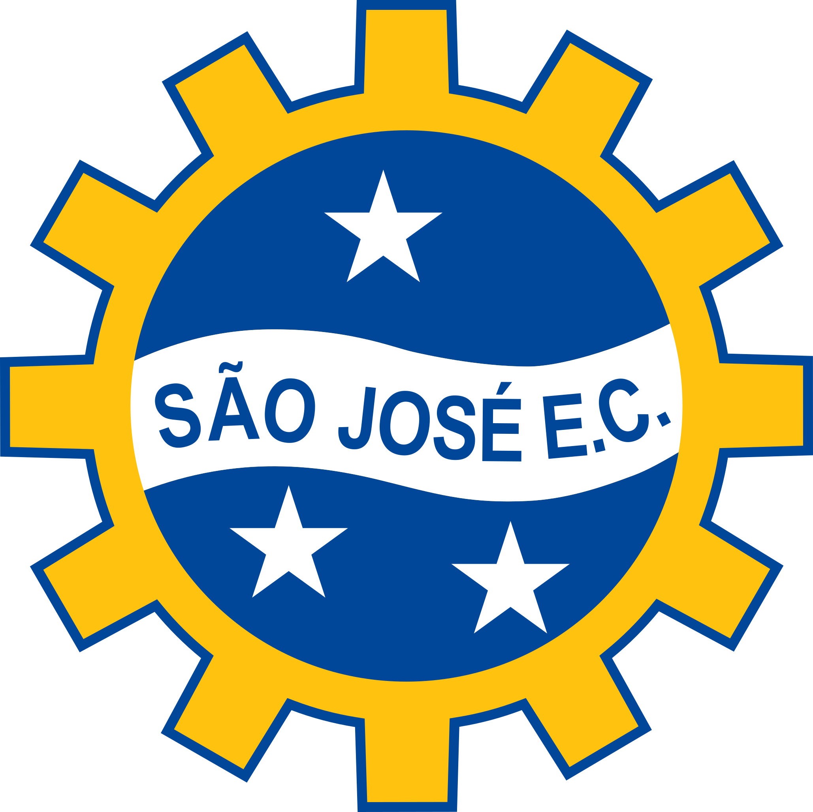

Criando a primeira SAF 100% data-driven, fundamentada em inteligência analítica, biomecânica de ponta e inovação no coração do Vale do Silício brasileiro.
Apresentação para InvestidoresO habitat natural perfeito para unir alta performance esportiva e engenharia de precisão.
Sede de gigantes da tecnologia, do ITA e do Parque Tecnológico. Uma cultura focada em inovação disruptiva pronta para transformar o modelo de gestão no futebol.
Engenharia aeroespacial, inteligência artificial e ciência de dados aplicadas diretamente ao scouting, tática e desenvolvimento físico dos atletas.
Região metropolitana com altíssimo poder aquisitivo e uma torcida apaixonada que clama por um representante de peso na elite do futebol nacional.
Inovação que gera valor competitivo dentro e fora de campo.
Scouting preditivo, métricas avançadas de desempenho em tempo real e algoritmos proprietários de análise de mercado e jogo.
Prevenção de lesões com monitoramento biométrico contínuo, wearables de alta precisão e protocolos de recuperação acelerada.
Infraestrutura de excelência com laboratório biomecânico integrado, tecnologia imersiva de análise tática e equipamentos de ponta.
Uma trajetória sólida e planejada rumo ao topo do futebol brasileiro.
Fundação e Estruturação: Constituição da SAF, captação de investimento semente, disputa sólida na Copa do Brasil/Série D e implementação do núcleo de dados.
Escalabilidade: Acesso à Série B, consolidação das categorias de base orientadas por métricas e expansão de receitas digitais e patrocínios.
A Elite Nacional: Acesso à Série A, consolidação do EC São José como referência tecnológica na América Latina e sustentabilidade financeira na elite.
Buscamos parceiros estratégicos e visionários — prontos para abraçar um projeto de disrupção, inovação e crescimento exponencial no futebol.
Seja um Investidor Âncora